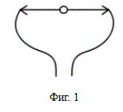
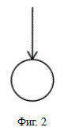
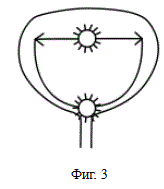

Беседа 3074 от 3877 · Беинса Дуно
Млади, възрастни и стари
Добрата молитва.
В начало бе Словото.
Мога да кажа.
Има три вида хора в света: Едните ги наричат деца, вторите ги наричат възрастни и третите – стари. Тези, които не разбират български, ще слушат както в музиката само пеенето. Един цигулар говори ли? Сега ще слушате един концерт на цигулката без думи. На едни от вас ще се пее, пък на други ще се свири. Едни ще запомнят думите, други ще запомнят само гласа. Един ребус е това. Българите знаят толкоз, колкото и французите. Французите знаят толкоз, колкото и англичаните. Всичките хора знаят едно нещо. Всички хора знаят да ядат, общо нещо. Всички хора знаят да спят. Сега ще кажете, че знаят да ходят. Но какво е ходенето? Ходенето в природата си има свой вътрешен смисъл. Ако хората биха знаели да ядат тъй, както трябва, нещастията в света ще се премахнат. Ако знаеха как да ходят, много нещастия в света биха се премахнали. Ако знаеха как да работят, пак много нещастия биха се премахнали. Сега може да разгледаме нещата от няколко положения. Някой казва: „Аз разбирам някои работи.“ Той ги разбира хипотетически, смътно понятие има. Запример, какво нещо е светлината? Хората казват, че знаят светлината и при това се спъват. Тогава, когато разбира светлината и се спъва, какво е неговото положение? Не е така изгодно. Вие седите и мислите, че знаете някои работи. Хипотетически ги знаете. Теорията иде да обясни малко по-обширно хипотезата. След теорията иде науката. Казвате, че нещо е научно доказано. Чрез научно доказаното достигаме до едно положение, дето тази светлина се изменя. Какво получавате от това изменение?


Сега, допуснете, един съвременен господин, който минава за културен човек, в какво седи неговата култура? Външната страна е, че той трябва да има хубави обуща, хубави дрехи, после ще има един хубав часовник, някой в джоба си ще има някое хубаво перо или някой молив, космите ще бъдат добре вчесани на главата, дрехата му изчистена. Ако дрехите са чисти, показва, че той знае какво нещо е чистотата. Някой път има културни хора, които имат широки яки проповеднически. Ако идете в Америка, ще намерите, че проповедниците имат високи яки, с рединготи затворени, защото се счита за некултурно яката на един свещеник да е отворена. Туй в културно отношение. Ако вземете (дрехите) на мъжа, съвсем друга форма имат от дрехите на жената. Защо жените носят широко отворени рокли, а мъжете имат два тесни крачола и ръкавите са тесни, не са широки? На жените някой път ръкавите са по-широки. Вас ви се вижда смешно. Не е смешно. Всичко има вътрешен смисъл. Не е лошо човек да се облича, но трябва да знае как да се облича. Ако имаш една хубаво направена цигулка, не само цигулката трябва да е направена много хубаво, но трябва да знаеш и какви струни да туриш. Цигулката има една дебела струна, направена от метал, после има друга една струна, направена от материалите на някое млекопитаещо, от овца или от друго някое животно. След туй тия струни малко отъняват, най-долната струна е най-тънка. След това цигуларят като вземе да гласи цигулката, има един метод за гласене, че в кварта той гласи цигулката. Четири струни са, имате първата „сол“, имате „ре“, „ла“, имате и „ми“. Някои цигулари, когато искат, гласят още малко по друг начин, може и в терца да е нагласено, пък може и в секунда, някъде може и в кварта. То е по отношение на цигулката така. В цигулката много мъчно може да се свири, тъй, както в пианото. Ти може да свириш с едната ръка, много мъчно може да свириш, да вземаш едновременно два тона на цигулката е много мъчно. Най-първо, ако вземеш само един тон, много мъчно е да вземеш верен тон. Понеже има едно чувство за измерване, всичките цигулари не са така майстори. Защото един цигулар трябва да разбира геометрия, математика отлично. Едно малко изместване, тонът се изменя вече. В китарата тоновете са определени, но в цигулката не са определени. Сега вие отивате в живота, искате да постъпвате, но когато човек дойде да постъпва съобразно със своите разбирания, той трябва да свири на своята цигулка. Цигулката разбира свободно разбиране на живота. В даден случай ти си някъде, но знаеш как да постъпиш. На цигулката няма определено място да знаеш къде се намира известен тон, трябва да го имаш в себе си. Онзи човек, който няма тона в себе си, той не може и да го произведе. Всичките хора са започнали различно живота, понеже не са взели основния тон еднакво. Запример, когато са създадени рибите, съвсем друг тон са взели, когато е създаден човек, вече тонът е друг. Ако ти в живота нямаш за основния тон една определена мисъл, едно определено чувство и едно определено разбиране, ти не можеш да вземеш вярно този тон. Щом се взема един тон неверно, става набръчкване на лицето, някои мускули се свиват. Някои хора, като не могат да пеят, някой дефект се явява или в крака, или в ръцете им, или в гръбначния стълб, или се явява дефект в тяхната глава. Някои казват: „Какво става с пеенето?“ Ако ти не пееш правилно, ти ще изопачиш целия строеж на твоето тяло.

Като бяхме на Рила, една вечер наклали един голям огън. Стотина, двеста души ходихме за дърва, направили голям огън и на другия ден няма дърва. Удоволствието за една вечер създаде работа за 100–200 души. Няма дърва, няма магаре да носи, няма кола да купиш, трябва да ходиш сам да вземаш дърва. Ти си свършил университет, кой ще ти вземе дърва? Ние се срамуваме от външния свят. Когато влезе в ума ти една мисъл, която не е естествена, едно желание, което не е естествено и това желание ти подхранваш, мислиш, че ти си умен човек? Нечистите желания се размножават като микробите. Една микроба с милиони се наплодява. Те нямат туй разбиране на човека и те оставят своите нечистотии в кръвта и заради това се зараждат много болести. Много хора умират от нечистотиите на микроорганизмите. Много хора страдат от нечисти мисли и желания, които оставят нечистотии в хората.
Бъдещата култура, ако дойде култура, трябва да научи хората как да ядат. Човек да яде с любов. Вземеш един плод, ще го умиеш хубаво с най-хубавата вода, ще му прочетеш една молитва, после ще попиташ невидимия свят поволява ли ти да го изядеш. По кой начин, как се яде онова ядене. Няма да бъдете като онзи цар, на когото донесли едно ядене и той не знаел как се яде. На един от неговите поданици дали няколко семки череши, той ги посадил и като израсли и дали плод, той напълнил една табла и отишъл да занесе на царя, за да добие неговото благословение. Хубави били черешите и понеже царят бил далече, вземал си по пътя по една череша и си казвал: „Много са хубави и царят ще бъде доволен, като вкуси.“ Най-после останали само две, занесъл ги на царя и той го пипитал как се ядат. Изял и двете, за да му покаже как се ядат. Всяко едно ваше желание мяза на този поданик, който ви носи подарък две череши и ще ви покаже как се ядат. Питам: Де е лошото сега? Този цар е бил много умен човек. Мислите ли, че този поданик после е прокопсал? След години го довели при царя и той го осъдил на десет години затвор, понеже извършил престъпление. Дал заявление на царя и го молел да му прости прегрешението. Казва: „Аз съм онзи, който донесох двете череши.“ Казва: „Ако не беше ми ги показвал, щеше да ти върви по-добре.“ Ако не беше го попитал как се ядат черешите, но той го попита как се ядат и трябваше да каже. Той трябваше да каже: „Ваше Величество, аз искам от вас да науча как се ядат. Вие знаете.“ Той веднага дава урок на царя как се ядат. И десет години го осъждат затвор. Питам: Вие всички сте изпратени в затвора и сега се молите да ви пуснат от този затвор. Защо ви обвиняват? На първите хора казаха: От черешите няма да ядете. А те ядоха от черешите. Те искаха да кажат на провидението на Бога: Ние искаме да знаем какво е свойството на черешите. Аз вземам черешата като един символ. Може да турите кой да е плод, законът е същият. Всяко едно неестествено желание е като забранения плод. Да ви приведа един пример. Майката казва: „Защо да не се яде?“ Хубаво, но ако на онова дете, което едва се е родило, му дадете да яде череши, какво ще стане с него? Ако майката храни още първия месец детето с череши, какво ще стане с детето? Преди десетина години иде при мене една жена и казва: „Детето ми е на умиране.“ Казвам: Повикайте лекар. – „Не искам лекар, защото лекарите ми умориха първото дете.“ Казвам: Как го умориха? – „Кажи ми ти цяр, здраво беше това дете.“ Казвам: Какво му даде да яде? С мляко ли го храни? – „Дадох на детето една слива да си играе, недоузряла беше и детето я нагълтало.“ Казвам: Сега ще вземеш рициново масло и ще се свърши. – „Защо?“ – Казвам: Сега ще вземеш рициново масло и ще дадеш на детето. Изкараха се твърдите работи и детето дойде в естествено положение. Ти не можеш да храниш едно дете кърмаче с ябълки. Някои желания във вас, някои мисли във вас са твърди и като това дете трябва да вземете рициново масло, за да се освободите.
Казвам: В човешкия живот се изисква една съсредоточена мисъл. Всичко онова, което Бог създал в света, има свой смисъл. Трябва да се учи. Младите като дойдат до пълната възраст, главата почернее, другите като остареят, побеляват. Какъв е смисълът на белите косми и на черните косми? Защо побелява главата? Най-първо тебе ти турят черен цвят, за да се научиш да събираш. Чашата е черен цвят, изпразнената чаша, като се обърне надолу, е бял цвят. Старостта е наука да раздаваш, тя е щедрост. Вие, които сте остарели, казвате: „Побеля ни главата, но няма какво да раздаваме.“ Аз правя заключението: Значи на младите години не сте събирали, сега няма какво да раздавате. Казва: „Черен съм сега.“ Много е хубава тази чернота. Черният цвят е привидно черен. Ако откриете една дупка, дето не влиза светлина, се показва черен. Тя е една илюзия. Някои хора са черни и това е хубаво. В черния цвят чувствата са по-добре развити, отколкото в белия. В черната пръст се ражда хубавото жито. Питайте земеделеца: „Къде става хубавото жито, в черната пръст или в бялата?“ Главата един ден ще побелее. Сега някои глави са черни, растенията плод дават. Белите косми показват, че хамбарят трябва да бъде пълен. Какво е предназначението на стария човек? – Да раздава. Какво е предназначението на възрастния? – Постоянно да събира. В своето сърце събираме хубавите желания, в ума си раздаваме тия желания, които се превръщат на една изработена мисъл. Тогава ние може тази мисъл в една поетическа форма, в една религиозна форма, в каквато и да е форма да я раздадеш. Но има начини за раздаване на своята мисъл. Има признаци. Аз като гледам устата ви, на някои от вас чувствата са подтиснати. Вие се отнасяте много зле с вашето сърце. Някои от вас си притискате устните. Вие нямате право да подтискате вашето сърце. Ако държите устата отворена е едно, ако държите устата затворена, е друго. Устата трябва да бъде прилепена. Някой път като станете сутрин, трябва да дадете свобода на устата си, да я оставите естествено, защото устата е разумна. Тия клетки, които образуват двете бърни, те са разумни. Трябва да се даде свобода. След туй трябва да освободите и вашите очи. Не гледайте на безобразни работи. Като минавате, гледайте хубави, красиви неща в света. Ако ходите да гледате как хората умират, ако ходите да гледате как колят животните, вие ще се покварите. Никога не ходи да гледаш едно престъпление как се върши. Има учени хора, които правят вивисекции. Хубаво, ако вие правите вивисекция на едно ваше желание или на една ваша мисъл, знаете ли какво ще стане? Ако една мисъл във вас е паразитна, какво трябва да направите с нея? Някой път хората не знаят какво трябва да правят с въшките. На изток доста въшки има. Във време на войната доста въшки се набират. Изчистете тия въшки, съберете ги в едно шише, изсипете ги на едно място песъчливо, да се научат тия въшки да пасат. Сега вие се покварявате, понеже като хванете въшката, натиснете я с ноктите, убиете я. Но ти с това покваряваш себе си. Като убиеш една бълха, една въшка, може би след няколко прераждания ще те накарат .. Остави я по тревата да пасе, тури дето нищо не расте, накарай въшката да мисли. Някои от вас се намирате при много лоши условия. Тия лоши условия ви се дават, понеже въшки се наплодили. Тия въшки, те са вашите лоши мисли и желания, които се турят на мозъка. Ти започнеш да роптаеш. Благодари, че те поставили при лошите условия. Ако не сте поставени при лоши условия, ще бъде зле за вас. Когато минавате такива неприятни състояния, че всичко във вас е тъмнота, радвайте се на тази вътрешна тъмнота. Хубаво е човек да е изгубен в мъглата, понеже онези, които имат да вземат, няма да го намерят. Някои препоръчват как трябва да живеят. Аз бих ви препоръчал, когато двама души се скарат, да идат на планината и да се разделят в мъглата. Ти ще мислиш за онзи, който те мъчеше. Вие веднага ще започнете да мислите един за друг. Достатъчно е да бъдете разделени три–четири часа и като се върнете дома, намерите пътя, вие ще се намирате в едно хубаво душевно състояние.
Та казвам: Всичките културни хора се намират в едно противоречие. В новата култура се изисква хората да имат една отлична мисъл. Човек трябва да бъде господар на себе си. Аз забелязвам, когато някой ще се кара, той не може да се въздържа. Като не може да се въздържа, на устата от двете страни на устните се образува едно движение, треперене. Помнете, че човек трябва да стане господар на своите желания. Едно чувствувание, едно желание не трябва да те изважда от нормата на света. Питам: Ако вие идете в един съвременен дом, двама други в едно семейство се скарали, мъжът и жената. Дойде гостът, те го турят за арбитър. Мъжът разправя своята история, разправя за жена си. Казва: „Обичахме се, каква красавица, колко хубава беше, хубаво се обличаше. Сега, като се оженихме, заяла ме, ще ме изяде.“ По български говоря, не по френски. Жената казва: „Какъв беше едно време, красив, пък сега и той ме заял, ще ме свърши, какво да правя?“ Питам: Коя страна ще вземеш? Ако ви турят в положението на примирител, как ще ги примирите тия двамата, които най-първо се обичаха, пък сега не се обичат? Ако вземеш страната на жената, мъжът ще хвърли подозрение, ще каже: „Хвърлил е око на жена ми.“ Сега, ако си мъж, че вземеш страната на жената, е лошо. Ако е жена и вземе страната на жената, как ще разрешите въпроса? Допуснете, че мъжът и жената влизат в един гранд ресторант. Яли са, пък няма да платят. Господарят ги хванал и ги държи и двамата. Седят и двамата. Аз влизам и той казва: „Тя ме накара да вляза.“ Аз коя страна ще взема? Какво трябва да направя? Аз ще кажа нещо на гостилничаря: Аз го кредитирам, плащам и за двамата. Давам свободен път. Щом искате да изправите един човек, вие трябва да платите неговите дългове. Някой казва: „Не съди!“ Ако нямаш пари да платиш дълговете, не съди! Казвате: „Бог ще ни съди. Ще плати заради нас.“ Втори път ще направиш същата погрешка. Първият път като видите Бога в гостилницата, започвате да му разправяте своята история. Като плати, той ще каже: Когато имате пари, тогава влизайте в гостилницата, като нямате пари, стойте навън. Благоприличието го изисква. Аз виждам, че мнозина от вас сте в този ресторант вътре. Мнозина от вас има, които седите и казвате: „Какво ще се прави?“ В широк смисъл говоря. Някой път човек са намира в затруднено състояние на своята мисъл, на своите чувства и на своите постъпки.
В съвременната култура се изискват три неща: Хора, които да придобият светли мисли, хора да придобият светли чувства и силни постъпки. Или се изисква човек, човек, който да знае как да мисли, как да чувствува и как да постъпва. Няма в света по-хубаво нещо от (това) да знае човек как да мисли. Целият външен свят е едно предметно учение. Човек не е дошъл на земята само да яде и да пие. Той е дошъл да се учи как да прилага Божественото учение и как да работи. Казвам: Младите трябва да знаят как да ядат, възрастните трябва да придобиват тази храна, а пък старите трябва да раздават тази храна. Всеки един стар човек да повика един млад и да каже: „Синко, едно време аз бях като тебе, аз ще ти покажа от моя живот еди-кои си работи, не ги прави, понеже те имат лоши последствия, прави другите, които имат добри последствия.“ Следователно, задръжте в себе си само онези мисли, само ония желания, само ония постъпки, които може да ви подигнат. Задръжте в себе си светлината, която може да ви е потребна, задръжте в себе си топлината, която може да ви е потребна, задръжте в себе си и силата, която може да ви е потребна. Силният човек е онзи, който мисли. Силен човек е онзи, който чувствува, силен човек е онзи, който има сила да приложи своите мисли и да приложи своите желания. Приложете светлината на мъдростта и приложете силата на истината и вие ще бъдете свободни.
Отче наш.
Да бъдете млади и да бъдете възрастни, и да бъдете стари.
Само светлият път на Мъдростта води към Истината.
В Истината е скрит животът!
XVIII година.
38 лекция на Младежкия окултен клас,
държана от Учителя на 25 август 1939 г., петък, 5 ч. с.
София – Изгрев.
Бележка /от координатора Вергилий Кръстев/: На 18 август 1939 г. лекцията е отпечатана в томчето „Езикът на любовта“: Беседи от Учителя, държани при Седемте Рилски езера през лятото на 1939 г. (София, 1939 г.).